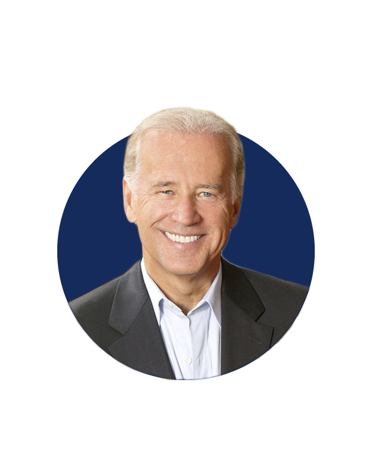

THE DEMOCRATIC CANDIDATES:
Bernie Sanders
- Bernie Sanders is an American politician who has served as the junior United States Senator from Vermont since 2007 and as U.S. Representative for the state's at-large congressional district from 1991 to 2007. Sanders is the longest-serving independent in U.S. congressional history, though he has a close relationship with the Democratic Party.
Source: Wikipedia
- Sanders is known for his opposition to economic inequality and neoliberalism. On domestic policy, he supports labor rights, universal and single-payer healthcare, paid parental leave, tuition-free tertiary education, and an ambitious Green New Deal to create jobs addressing climate change.
Source: Wikipedia

Joe Biden
- Joe Biden is an American politician who served as the 47th vice president of the United States from 2009 to 2017 and represented Delaware in the U.S. Senate from 1973 to 2009. A member of the Democratic Party, Biden is a candidate for president in the 2020 election.
Source: Wikipedia
- His resume is virtually unmatched and the Obama years introduced him to a new a generation, but is he ready to fight through recriminations over his role in passing policies the party’s base now loathes?
Source: Politico
Elizabeth Warren
- Elizabeth Warren is an American politician and academic, serving as the senior United States Senator from Massachusetts since 2013. She was formerly a law school professor specializing in bankruptcy law.
Source: Wikipedia
- A member of the Democratic Party and a progressive, Warren has focused on consumer protection, economic opportunity, and the social safety net while in the Senate. She was also a Democratic candidate in the 2020 United States presidential election.
Source: Wikipedia
- Elizabeth Warren dropped out of the presedential election on March 5, 2020
Pete Buttigieg
- Pete Buttigieg is an American politician who was mayor of South Bend, Indiana, from 2012 to 2020. He was a candidate for the Democratic nomination in the 2020 United States presidential election.
Source: Wikipedia
- Buttigieg launched his campaign for the 2020 United States presidential election on April 14, 2019. He became the first openly gay person to launch a major presidential campaign.
Source: Wikipedia
- After placing fourth in the South Carolina primary, Buttigieg dropped out of the race on March 1, 2020, and endorsed Joe Biden the following day.
Source: Wikipedia